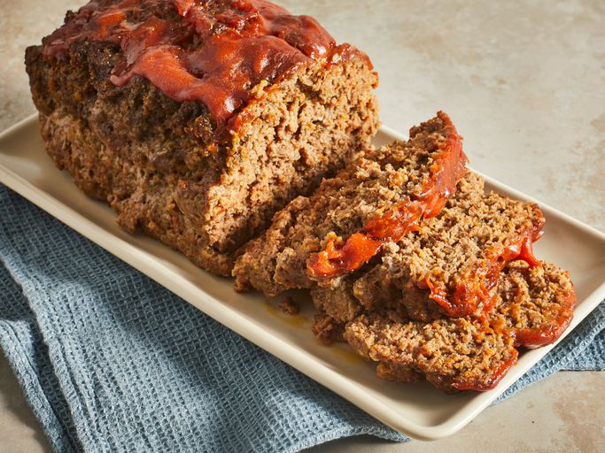

Home
Meatloaf

When you're in need of delicious comfort food that everyone in your household will love, a traditional meatloaf is the way to go. It's a classic meal, and it's an incredibly simple one too.
This top-rated recipe from Chef John is sure to become a family favorite in no time. And with only 30 minutes of prep time, you won't mind making it every time it's requested!
Traditional Meatloaf Ingredients:
- Ground Chuck - This recipe specifically calls for chuck, but you could use anything. We use pork!
- Vegetables - Nearly-Pureed Carrot, Celery, Onion, Bell Peppers, Mushrooms and Garlic.
- Worcestershire Sauce - Just a tablespoon will give your meatloaf a unique umami-rich flavour.
- Eggs - To bind the meat.
- Spices - Get creative, but try Italian Herbs, Salt, Pepper and Cayenne Pepper.
- Breadcrumbs - Another key ingredient to help bind the meat.
- Glaze - This recipe calls for a glaze made from Brown Sugar, Ketchup, Dijon Mustard and Sriracha.
How to Make the Meatloaf:
- Chop the Veggies - Mix everything together (plus the Garlic) in a food processor until nearly pureed.
- Form the Meatloaf - Combine the Meat, Veggies, Spices and Egg. Sprinkle on Breadcrumbs as you mix, but be mindful not to overmix. Mix by hand and slowly form the mass into that loaf shape.
- Bake - Only for about 15 minutes.
- Make the Glaze - Combine Brown Sugar, Ketchup, Dijon and Sriracha.
- Glaze the Meatloaf - Remove the Meatloaf from the over and spread the glaze with a spoon.
- Return Glazed Meatloaf to the Oven - Continue to bake it until it reaches an internal temperature of 160 Degrees F.